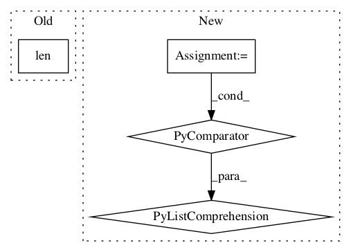

f360de0fa4454122d665b9c32f4d5911a4ebec0c,niftynet/layer/loss.py,LossFunction,layer_op,#LossFunction#Any#Any#Any#Any#,32
Before Change
else:
data_loss += self._data_loss_func(
pred, ground_truth, weight_map)
return data_loss / len(list_prediction)
def generalised_dice_loss(prediction,
ground_truth,After Change
prediction = [prediction]
if self._num_classes > 0:
// reshape the prediction to [n_voxels , num_classes]
prediction = [tf.reshape(pred, [-1, self._num_classes])
for pred in prediction]
if weight_map is not None:
weight_map = tf.reshape(weight_map, [-1])
data_loss = []In pattern: SUPERPATTERN
Frequency: 3
Non-data size: 4
Instances Project Name: NifTK/NiftyNet
Commit Name: f360de0fa4454122d665b9c32f4d5911a4ebec0c
Time:
Author: null
File Name: niftynet/layer/loss.py
Class Name: LossFunction
Method Name: layer_op
Project Name: NifTK/NiftyNet
Commit Name: 534c4dc7423681faab78d1829c1ec3c31ffb8330
Time:
Author: null
File Name: niftynet/layer/resampler.py
Class Name: ResamplerLayer
Method Name: _resample_inv_dst_weighting
Project Name: openai/baselines
Commit Name: b71152eea0470ac2629c33e0fc66a54fe494949f
Time:
Author: null
File Name: baselines/common/vec_env/dummy_vec_env.py
Class Name: DummyVecEnv
Method Name: __init__